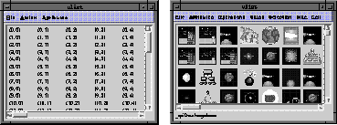
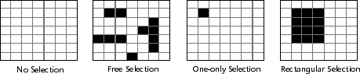
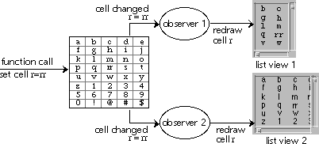
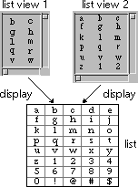
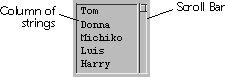

List
The list classes provide a collection of tools for maintaining and displaying lists of data. The list class separates data storage from display functionality. This separation allows a collection of data to be viewed in a number of places simultaneously, and makes it easy to change the data behind the list being displayed.
You can use the list classes solely for the storage of data, or also to control the graphical view of the data. The view is either a standard table of strings, or a customized view. There are virtually no limits to designing data displays since almost all aspects of customized drawing are available. Refer to Figure 44 as an example of displaying text and images in a list.
Figure 44. Sample views of lists

The list class frees you from having to create storage formats in memory, write routines to add and remove data, and design and implement the display of standard information.
cell name Character string used as an identifier for finding and
sorting purposes.
cell value Data contained within a cell, regardless of type.
column Vertical location of a cell.
iterator Used to move from one cell to another in a list or selection.
An iterator visits each cell in a list or selection only once.
list One- or two-dimensional data storage object of almost
unlimited size.
observer Routine that watches the list for any change. After seeing
a change take place, the observer notifies all views assigned
to the list.
range Section of a list, usually defined as a range of rows or a
range of columns.
row Horizontal location of a cell.
selection Set of cells that have been specified as a group.
value Any one piece of information that resides in a list.
view Visual representation of the list data.
Relationship to Other Classes
The List class can also be used in conjunction with the Ruler class, allowing the user to optionally move and resize rows and columns.cell Fundamental unit of a list, containing one piece of data. A
cell is identified by its row and column location.
Lists
A list represents one- or two-dimensional data structures. The main purpose of a list is to maintain data, but they can be associated with a view to display the data in one or more places. Lists are useful when an application needs a dynamic array that can be easily manipulated and transformed. Lists can have up to two billion rows and two billion columns, and are designed for immediate use.
Cells
Lists are made up of cells. Cells are organized into rows and columns; each cell is identified by an ordered pair (row, column) describing its position. The row and column numbers start at zero and go up to one less than the total number of rows or columns.
List class methods provide basic capabilities such as the setting and changing of cell values. There is also a collection of routines that manipulate entire rows or columns. These routines provide for the following operations on rows and columns:
- insertion
- removal
- moving
- swapping locations
Selections
A selection is a set of cells that has been specified as a group. The cells in a selection are specified either by the application user through a combination of mouse clicks and drags, or programmatically by the API, through a collection of method calls.Although a selection is bound to one list, a list can have multiple selections. Each view of a list has a selection associated for display; thus, each list has at least as many selections as it has views.
When a selection is created or modified, it is checked against its selection method (interface ListSelectionMethod). The selection method controls what type of cell grouping can be specified in a selection. The following selection methods are available (refer to Figure 45):
- No selection
The selection is always empty. No cell can be chosen. - Free selection
You can choose any cell, combination of cells, or cell ranges within the list in any order. The selection can also be empty, and contain no cells. For example, if you first select a group of cells, and then add cell (3,6) to the selection, the new cell joins the selected group. - One-only selection
No more than one cell can be selected at any time. The selection can also be empty. For example, if you select cell (4,4), and then select cell (1,1), you will remove cell (4,4) from the selection. Only cell (1,1) remains. - Rectangular selection
The selection is either empty or it always forms a rectangle of contiguous cells. For example, if you select cell (1,1) and then select cell (4,3), all cells in the rectangle join the selection.

With the exception of the "no selection" method, each method can be modified such that the selection is never empty (at least one cell is selected at all times).
Selection methods can be modified so selections extend across rows or columns. For example, a one-only selection method can be subclassed to select an entire row or column at a time.
Selections track list data manipulations. If a selection has a particular row selected, and that row is subsequently moved in the list, the corresponding selected row is moved as well; the same cells are still selected after they are moved. If a selection is marked as immutable (it cannot be changed), this selection modification does not happen.
Note that selections do not necessarily have a visual effect. A spreadsheet application, for example, could use selections simply to track and maintain cell attributes, such as determining which cells have formulas attached to them.
Observers
Operations on a list can be tracked though an observer. An observer is notified whenever something changes in the list the observer is watching. Galaxy sets an observer for each view of a list. The view, using the observer, is able to display every change to the list object (refer to Figure 46). When an observer receives a message, it can ignore the message, communicate the message to some other object, or perform an operation on the list.
Figure 46. List observers working with a list and its views

Galaxy provides an observer class that you can override to handle any changes that need to take place when a list is modified. By default, the observer class ignores all notify events.
For example, a spreadsheet application using named ranges to perform computations can override the default "insert row" and "insert column" operations to maintain the named ranges. You can create another observer subclass to track all operations on the list to maintain an undo log.
By itself a listview is strictly a graphical component. It does not contain data or information about a list. Instead, each listview is programmatically assigned to a list, which allows it to work with the list's observer. This observer monitors the list and notifies the listview when changes occur. The listview then calls list data routines to obtain information about the cells, such as selection range, cell contents, and the total number of rows and columns in the list. By using the observer in this way, multiple listviews can display information from the same list, but will display the information according to their own display routines (refer to Figure 47).
Figure 47. Multiple listviews can display the same list

A listview can modify the list, but only by passing the operation on to the list. For example, if the user specifies a selection (using the mouse or keyboard), the listview notifies the observer. The observer, in turn, notifies the list and the list then sets the selection.
Always modify the information in a list from the list itself. For example, to insert cells, change the list object. The list object notifies the observers, and the observers then inform the various listviews of the change. The listview does not do the insertion itself; it only displays the insertion.
The default display characteristics of a listview depend on the current look-and-feel of the Galaxy application being run. Refer to the Look-and-Feel chapter for additional information.
Listitems are displayed just like listviews; the difference is in their creation and destruction. When a listitem is created, a list object is created with it. When it is destroyed, the list object that the listview is displaying is also destroyed. This differs from listviews. No list object is created with a listview, and the list object is left untouched when a listview is destroyed.
A default listitem (shown in Figure 48) has a vertical scroll bar. Listitems are useful when asking the application user to pick something from a set of items (such as the list of files in the file chooser or the list of fonts in the font chooser).
Figure 48. Appearance of the default listitem

Additional topics include using listviews to control the visual and behavioral properties of lists; creating a listitem to display string lists in a dialog; and using string lists.
Use Create to create a list, and SetCellValue to set cell values. It is not necessary to explicitly add rows and columns before setting cell values. The size of the new list automatically expands as needed to accommodate cells. Cell values that are not explicitly set default to NULL. Example 79 demonstrates using a list to hold a group of images.
Example 79. Creating a list of images
Example 80. Inserting rows and columns
Example 81. Moving and swapping rows and columns
Use NextIterator to advance to the next cell in the iteration. It returns FALSE when there are no more cells to iterate over; otherwise it returns TRUE. Use GetIteratorRow and GetIteratorColumn to get the location of the cell specified for iteration. Use GetIteratorValue to get the value of the cell specified for iteration. After completing your iteration, call vlistDestroyIterator to free any memory allocated by the iterator. Note that NextIterator does not guarantee the order of iterations. Each cell, however, is cycled through only once per iteration.
Be aware that if you iterate over a selection, and remove rows or columns during the iteration, you could create problems. As you remove rows or columns, the size of the list becomes smaller, but the iterator continues according to the original size.
For example, if your list has ten rows, and during a selection iteration you remove the first row, you will then access invalid memory if the selection iterator tries to access a row at the end of the list. This location is no longer valid since the list has decreased in size.
To remove selected rows, it is best to iterate over the selection and collect the marked cells in another data structure (such as an array), then remove the rows from the other data structure. Example 35 shows how to correctly remove rows by using a selection iterator.
Example 82. Removing rows from a list selection
For example, if you store a series of strings in a list, then it makes sense to have the cell name be the cell value. For a list of images, however, the cell name should be a string representing the cell value (the image).
Use DetermineCellName to get the name of a cell. By default, the List class typecasts the cell value to a vchar pointer. If your data is something other than character strings, you need to create your own cell naming procedure (vlistNameCellProc). Assign this new procedure to the List class by using SetCellNamer. For additional information and examples on setting cell names, refer to "Customized Cell Naming" on page 423.
In order to sort the cells, vlistSort calls a compare function of the type vlistCellValueSorterFunc to determine the sorting order. If the data in a list can be represented by vchar pointers, it is common to pass a null pointer for the compare function; then vlistSort uses vcharCompareBase to sort the list.
If you want to write your own compare function, a vlistCellValueSorterFunc is of the form:
Example 83. Sample sorting compare functions
To make the list behave most efficiently, specify that operations for one axis be more prevalent than those specified for the other. SetOrientation takes an orientation descriptor of vlistROW_MAJOR or vlistCOLUMN_MAJOR. The descriptor vlistCOLUMN_MAJOR (the default) specifies that column operations (such as inserting, removing, or sorting) are more efficient than row operations. The descriptor vlistROW_MAJOR specifies that row operations are more efficient that column operations.
Figure 49. List orientations
Note that if a list is one-dimensional (that is, one row or one column), setting the orientation to the other dimension (a one-column list with vlistROW_MAJOR orientation) consumes twice the space and has no performance impact.
Changing the orientation of a list that is already populated temporarily consumes twice the amount of memory that a list normally occupies. Therefore, it is more efficient to set the orientation of a list before populating it with data.
Example 84. Using a string list
Note that it is possible to set values in a string list by using SetCellValue. Although this does set the cell value with the given string, the string list does not maintain the ownership of the strings. You need to handle the creation and destruction of such strings yourself. Using scribes to set the values in a string list frees you from ownership issues.
Use SetList to assign a list to a listview and GetList to get the list a listview is displaying.
Many aspects of the listview can be controlled using the List class. The size of the cells in a listview are commonly controlled programmatically. Use SetRowHeight to change the height of a row, and use SetColumnWidth to change the width of a column. You can also set the height of all rows or the width of all columns at one time by passing vlistviewALL_ROWS or vlistviewALL_COLUMNS to the above calls. If you do not explicitly set row height or column width, the default height for rows is the height of the listview's font, and the default width for columns is the specified width of the listview itself, minus scrollbars and decorations.
You can also draw gridlines between the cells of a listview by calling SetHorzGrid and SetVertGrid. To control the appearance of the grid lines and the drawing of the cell, refer to "Customizing Listviews" on page 425.
Example 85 creates a listview, and then sets some standard attributes.
Example 85. Making a listview
A list can have more than one selection assigned to it at any given time. For example, if a list has several listviews assigned to it, each listview has a selection. A list might also have selections never visible to the end-user that are used to manipulate collections of a list's data.
A selection can be modified by using SelectCell (add a cell to a selection), SelectRange (add one or more rows or columns to a selection), and SelectAll (place all of the cells in a list into a selection). Similarly, remove items from selections by using UnselectCell, UnselectRange, and UnselectAll.
Use SetSelectMethod to assign the type of selection method. Types of selection methods include:
Listitems are usually created through the Visual Resource Builder; however, they can also be created programmatically. A listitem owns its list. The convenience functions PrependScribed and AppendScribed add scribed strings to the beginning or end of a list.
The default display characteristics for a listitem reflect its one-column orientation. The listitem column width is calculated by using either the maximum width of a listitem (and subtracting space for a vertical scroll bar and a border), or the width of the longest string in the listitem. The listitem's row height is equal to the height necessary to display any string in the listitem's font without clipping the contents. The default listitem has a vertical scroll bar and the one-only select method. Example 86 creates a listitem through the API instead of with the Visual Resource Builder.
Example 86. Making a listitem
Example 87. Data structure containing list information
Example 88. Adding several pieces of information to a list's cell
Example 89. Setting a cell's value with a unique data structure
Example 90. Destroying a list with individualized cell contents
Example 91. Customized cell naming
Example 92 uses a dictionary to hold the list cell values. The key to the dictionary is determined from the row and column number of the cell. This limits the size of the list to 216 entries (approximately 32,000), since the key size is two bytes, or sixteen bits. While this representation can be useful for sparse lists, it does not work if rows or columns can be inserted, removed, or rearranged, since the key is based on the row and column information. Refer to the Dictionary chapter for information on using dictionaries and dictionary keys.
Example 92. Custom data representation for a cell
The most commonly overridden method is vlistviewDRAW_CELL_CONTENTS. For this reason, SetCellContentProc allows you to replace the default drawing routine with a drawing routine of your own without having to subclass the listview object.
The default behavior for this method is to take the cell's value as a vchar* and attempt to draw the string. The string is offset from the left side of the rectangle by a fixed amount, defined in the class variable vlistviewCELL_CONTENT_INDENT. The default listview cell drawing code is shown in Example 93.
Example 93. Default cell drawing routine
Example 94. Customizing the cell content drawing
While receiving vlistviewSELECTION_WILL_CHANGE and vlistviewSELECTION_HAS_CHANGED, the original unchanged selection can be accessed using GetSelection. The currently visible selection (the one that is in the process of changing) is accessible using GetVolatileSelection. This is the selection used during live dragging. If you want to find out if the selection is a result of a multiple mouse clicks, query the status of the last click with GetLastPointerClickCount.
Example 95 is a sample selection notify procedure that updates a dialog item's image to be the currently selected cell value. Multiple clicks cause a beep.
Example 95. Selection-notify procedure
While iterating over the selection, it is valid to change the selection, as shown in Example 96. In this example the selection is modified by removing the cells from the selection when the sum of their row and column yield a prime number.
Example 96. Using an iterator on a list's selection to change the selection
Example 97. Customizing a listview for synchronized scrolling
Listviews
A listview (vlistview), a dialog item subclass, displays the data held in a list data object. The listview's dimensions may be smaller than the area needed to display the whole list, so scroll bars and a "grabbing hand" are available to scroll and pan through the list. Listviews also have an associated selection that allows users to specify ranges of the list for list operations. Everything associated with the display of a listview, from how each cell is drawn to how the selection is displayed, can be customized. Keyboard Focus
The keyboard focus allows you to use the keyboard to traverse the listview by designating one cell as "focused." You can use the focus to navigate through a listview without changing the selection for the list, and without using a mouse. Listsize
Although rarely used by an application directly, listsizes control the sizing of the list. Some convenience calls are located in the listview API to handle most of the common functions, such as setting row height and column width. Additional functions are available in the listsize API to handle detailed information regarding the sizing of a list. String Lists
A string list is a list subclass that manages lists of strings. String lists let you set and retrieve cell values using non-shared scribes. Galaxy handles the allocation and destruction of strings behind the scenes when the strings are set using non-shared scribes. This frees you from memory allocation and string ownership issues; you do not have to create strings as they are added to a list, and later destroy them when a cell is removed. Refer to the String chapter for additional information on scribes. Listitems
A listitem is a listview subclass which contains a one-dimensional list of strings, and provides a convenient way to manipulate a single-column collection of strings. Like string lists, listitems handle memory issues when values are set by using non-shared scribes. Using the List Package
This section provides information and examples for using the list classes in your applications. It discusses how to use a list as an internal data structure; how to create lists; how to add and remove columns and rows to and from lists.; and how to destroy lists. Using Lists Internally
A list is basically a two-dimensional dynamic array of void pointers; any pointer value (or any value that can be safely cast to a void pointer) can be placed into a list. Galaxy does not copy the actual data into the list, just the reference to the data, without regard to its type.vlist *CreateAListOfImages(void)
{
vlist *list; /* new list to create and return */
vimage *image; /* cell value scratch variable */
int row = 0; /* row count */
int column = 0; /* column count */
list = vlistCreate();
// Note user defined function GetAnImage
while ((image = GetAnImage()) != NULL) {
vlistSetCellValue(list, row, column, image);
row++;
}
return(list);
}
Use GetCellValue to retrieve a cell value. The following call retrieves an image from the list created in Example 1. The typecast is necessary, since GetCellValue returns a void pointer. image = (vimage *)vlistGetCellValue(list, row, column);
Note that the first row in a list is row number zero, and that the first column in a list is column number zero. Inserting Cells
Use InsertRange to specify insertion of a range of rows and columns into a list. Example 80 illustrates insertion of rows and columns. /*
* Insert three columns before column one (after column zero)
*/
vlistInsertRange(list, 1, 3, vlistCOLUMN);
/*
* Now insert five rows before row number two (after row one)
*/
vlistInsertRange(list, 2, 5, vlistROW);
All rows or columns after an inserted row or column move down. The newly inserted rows or columns contain cells with the value of NULL. If you insert a row past the end of a list, the list expands to accommodate the insertion. To determine how many rows and columns a list currently contains, use GetRowCount and GetColumnCount. Moving and Removing Cells
Similar operations are available for moving and swapping rows and columns, as illustrated in Example 81. /*
* Move the row located at row zero to row five.
* This also causes the rows that were located in
* row one through row five to each be moved up,
* making them row zero through row four.
*/
vlistMoveRange(list, 0, 5, 1, vlistROW);
/*
* Now exchange the column located at column four
* with column three.
*/
vlistSwapRange(list, 4, 3, 1, vlistCOLUMN);
Iterating Through the List
Use list iterators to cycle through the contents of a list or the contents of a selection in a list. Iterators differ only in how the iterator is initialized. Use InitIterator to initialize an iterator for an entire list, and use InitSelectionIterator to initialize an iterator for a selection in a list.void MyRemoveSelectedRows (vlist *list,
vlistSelection *selection)
{
vbool *markedRows;
vlistIterator iterator;
int row;
/* Determine which ones need to be removed */
markedRows = (vbool*) vmemAllocAndClear(sizeof(vbool) *
vlistGetRowCount(list));
vlistInitSelectionIterator (&iterator, selection);
while (vlistNextIterator (&iterator)) {
row = vlistGetIteratorRow (&iterator);
markedRows[row] = TRUE;
}
vlistDestroyIterator (&iterator);
/* Remove the rows in reverse order */
for (row = (vlistGetRowCount(list) - 1); row >= 0; row--) {
if (markedRows[row]) {
vlistRemoveRow (list, row);
}
}
/* Clean up */
vmemFree (markedRows);
} /* MyRemoveSelectedRows */
Cell Values Versus Cell Names
A list can contain any data which can be safely cast to a void pointer. The actual data is referred to as the cell value. A cell can also be referenced by a name, which may or may not resemble the actual cell value. Finding Cells
To search for a particular value in a list, you can iterate over the entire list and compare values. However, you can also use the convenience function FindCell to locate a cell with a certain name, as illustrated in the following example. In this case, it starts at row zero and column zero to search for the cell whose value is "Fred." If found, it returns the location in row and column:vlistFindCell(list, "Fred", &row, &column,
0, 0, vlistFIND_COLUMN_MAJOR);
You can specify the following to indicate the order of the search:
For more information on list orientation, including an illustration, refer to "List Performance" on page 418.
Sorting a List
Use vlistSort to sort the list contents. You can specify a sort along either axis (for example, you can move rows or columns to accomplish the sorting) using any row or column as a sort key.typedef int *(*vlistCellValueSorterFunc) (
const void *value1,
const void *value2);
The void pointer values passed to the compare function are gathered by vlistSort using vlistGetCellValue. A compare function should return a number less than zero if value one is less than value two, a number greater than zero if value one is greater than value two, or zero if both values are equal. Your compare function should be based on the type of information you are storing in a list. Sample compare functions evaluating integers are presented in Example 83.int SortFromLowToHigh (int value1, int value2)
{
int x = value1;
int y = value2;
if (x < y)
return -1;
if (x > y)
return 1;
/* They must be equal */
return 0;
}
int SortFromHighToLow (int value1, int value2)
{
int x = value1;
int y = value2;
if (x < y)
return 1;
if (x > y)
return -1;
/* They must be equal */
return (0);
}
Using the compare functions defined in Example 83, and assuming the list contains a series of integers, you can sort the rows in your list from low to high values by doing the following:vlistSort(list, vlistROW, 0, SortFromLowToHigh);
You can also sort a list using vlistSortByName. This type of sorting acts like vlistSort, except it calls vlistDetermineCellName instead of vlistGetCellValue, sorting the list according to cells names rather than cell values. Refer to "Customized Cell Naming" on page 423 for more information on cell names. List Performance
The List class does not store the list contents in a "packed" array format, but uses a complicated scheme that allows the list to expand and contract without the overhead of reallocating the entire array. Thus, the operations in one axis (rows or columns) are more efficient than in the other. Usually, this orientation is transparent to the end-user. Using String Lists
A string list (vliststr) is a list subclass that makes lists of strings easier to manage. Example 84 shows how to populate a string list using an array of strings:void PopulateListstr (vliststr *liststr)
{
char *table[] = { "Bach", "Mozart", "Beethoven",
"Vangelis", NULL};
char **scan;
int row, column;
row = 0;
column = 0;
for (scan = table; *scan != NULL; scan++) {
vliststrSetCellValueScribed (liststr, row, column,
vcharScribeLiteral(*scan));
row++;
}
}
One of the advantages of using string lists is that memory management and ownership of strings is handled behind the scenes by Galaxy. By using SetCellValueScribed, copies of strings are created (unless they are marked in the scribe as not being shared). These copies are owned by the string list, and automatically destroyed when the string list is destroyed. For more information on scribes, refer to the String chapter. Using Listviews
A listview is usually created in a dialog resource with the Visual Resource Builder, although one can also be created programmatically.vlistview *CreateMyListView(void)
{
vlistview *listview;
vlist *list;
listview = vlistviewCreate();
list = vlistCreate();
/*
* Fill the list with information with
* a user defined function.
*/
MyPopulateList(list);
/* Assign the listview to the list */
vlistviewSetList(listview, list);
/* turn on scroll bars */
vlistviewSetHorzBar(listview, TRUE);
vlistviewSetVertBar(listview, TRUE);
/*
* Set selection method. Since selections live in the list,
* we need to use the vlist* selection calls.
*/
vlistSetSelectMethod(vlistviewGetList(listview),
vlistviewGetSelection(listview),
vlistONE_ONLY_SELECTION);
vlistSetAtLeastOneSelection(vlistviewGetList(listview),
vlistviewGetSelection(listview),
TRUE);
return (listview);
}
Using Selections
A selection is used to specify and control groups of cells. Note that although selections can be specified through a listview, the selection behavior is controlled through the list API, not the listview API. Selections belong to the list the listview is viewing, not to the listview. You can obtain a reference to the currently displayed selection with GetSelection.
You can also specify that a selection always has at least one cell selected by using SetAtLeastOneSelection. Refer to Figure 45 on page 411 for a graphical representation of the selection methods that can be assigned to a selection. Using Listitems
A listitem is useful when displaying a one-dimensional (single-column) list of string information. A listitem is a listview subclass that contains a one-dimensional list.If list data is assigned by using non-shared scribes, the listitem controls memory allocation and clean up. If you use something other than scribes to assign the listitem data, it is your responsibility to create and cleanup the character strings placed in a listitem.vlistitem *CreateMyListItem(void)
{
vlistitem *listitem;
vchar *string;
listitem = vlistitemCreate();
/*
* The function GetAString is a user defined function
* that returns a string after retrieving it from
* a user defined location.
*/
while ((string = GetAString()) != NULL)
vlistitemAppend(listitem, string);
/* sort the list for easier reading */
vlistitemSortList(listitem, NULL);
return (listitem);
} /* CreateMyListItem */
Storing Data In a List Cell
A cell in a list often contains a reference to a single piece of information. Many times, however, it is desirable to place several pieces of information in a single cell. This can be accomplished by creating a structure to hold the information, and then storing it in the list./*
* This is the data structure containing the information
* we want to keep (and display) in our list.
*/
typedef struct {
int value;
vimage *image;
vstr *name;
} list content;
Example 88 demonstrates how the data structure introduced in Example 87 can be added to a cell in a list./*
* Create and populate the list, allocating memory, etc.
*/
void CreateList (vdialog *dMain)
{
vlistview *lvSample;
vlist *lSample;
size_t x, numImages;
vresource rImages =
vresourceGet(rRoot, vnameInternGlobalLiteral("Images"));
list_content *contents;
vname *tempTag;
/* Find the listview in the dialog */
lvSample =
(vlistview *)vdialogFindItem(dMain,
vnameInternGlobalLiteral("lvSample"));
/* Create a list */
lSample = vlistCreate();
/* Tell the listview to watch the list just created */
vlistviewSetList(lvSample, lSample);
/* Find the number of images in the library */
numImages = vresourceCountComponents(rImages);
/* Fill the list with information */
for (x = 0; x < numImages; x++) {
/* Set aside the space for the contents */
contents = vmemAllocAndClear(sizeof(list_content));
/* Now get the information out of the resource file */
tempTag = (vname *)vresourceGetNthTag(rImages, x);
contents->name =
vstrCloneScribed(vnameScribeGlobal(tempTag));
contents->image =
(vimage *)vresourceGet(rImages, tempTag);
contents->value = x;
vlistSetCellValue(lSample, x, 0, (void *)contents);
}
} /* CreateList */
When retrieving information, remember to appropriately cast the return value of GetCellValue. list_content *contents =
(list_content *) vlistGetCellValue(list, row, column);
When setting data to the list, remember to appropriately cast the data. Example 89 illustrates this concept.{
// ...
list_content *contents;
contents->image = newImage;
contents->name = newString;
vlistSetCellValue(list, row, column, (void *)contents);
// ...
}
When the list is destroyed, it is important to clear the memory that has been allocated for the data in each cell. Example 90 illustrates cleaning up a list that contains the data structure introduced in Example 87.void CleanupList (vlist *lSample)
{
int row, column;
/*
* Starting with the last row and far right column,
* go through the entire list, get the cell value,
* and destroy the contents.
*/
for (column = (vlistGetColumnCount(lSample) - 1);
column >= 0; column--) {
for (row = (vlistGetRowCount(lSample) - 1);
row >= 0; row--) {
list_content *contents =
(list_content *)vlistGetCellValue(lSample, row, column);
vimageDestroy(contents->image);
vstrDestroy(contents->name);
vmemFree(contents);
}
}
} /* CleanupList */
Customized Cell Naming
By default, the List class uses the cell value as the cell name during a finding or sorting operation. If the cell contents cannot be represented as a string, you need to create a cell naming procedure and assign it to the list using vlistSetCellNamer. Example 91 shows an example of cell naming based on the list_content structure introduced in Example 87. This ensures that sorting and finding operations work with a valid character string.const vchar *MyCellNamer (vlist *list, int row, int column)
{
list_content *contents;
contents =
(list_content *)vlistGetCellValue (list, row, column);
return ((vchar *)contents->name);
} /* MyCellNamer */
Customized List Data Storage
At times, you may want to store data in a list as something other than a void pointer. Use SetCellValue and GetCellValue to set and get cell values. These are the only two routines that must be replaced to provide a different storage mechanism. Use SetCellValueGetter and SetCellValueSetter to set these routines./*
* Note that this example works only if the end-user
* does not delete or insert rows or columns.
*
* If inserting and deleting row and columns was going
* to be valid, you would create a subclass of a vlist,
* overriding vlistINSERT_RANGE, vlistREMOVE_RANGE,
* vlistSWAP_RANGE, and vlistMOVE_RANGE to keep the cell
* location in relation to its key in the dictionary up to
* date.
*/
void MyCellSetter(vlist *list, int row, int column,
const void *value)
{
int key;
vimage *checkit;
vdict *MyImageDict;
key = ((row & 0xffff) << 16) + (column & 0xffff);
MyImageDict = (vdict *)vlistGetDataset(list);
/*
* If there already was an image stored
* at that location, destroy it
*/
checkit = (vimage *)vdictLoad(MyImageDict, (void *)key);
if (checkit != NULL)
vimageDestroy(checkit);
vdictStore(MyImageDict, (void *)key, value);
} /* MyCellSetter */
const void *MyCellGetter(vlist *list, int row, int column)
{
int key;
vdict *MyImageDict;
key = ((row & 0xffff) << 16) + (column & 0xffff);
MyImageDict = (vdict *)vlistGetDataset(list);
return (vdictLoad(MyImageDict, &key));
} /* MyCellGetter */
vlist *CreateImageDictList(void)
{
vlist *list;
vdict *MyImageDict;
MyImageDict = vdictCreate(MyHashRowColKey);
list = vlistCreate();
/* Let the list know that we are using
* a custom data representation */
vlistSetDataset(list, MyImageDict, sizeof(MyImageDict) );
vlistSetCellValueSetter(list, MyCellSetter);
vlistSetCellValueGetter(list, MyCellGetter);
return (list);
} /* CreateImageDictList */
When providing a custom data representation, you need to override the following methods to provide advanced list operations:
Be sure to call vclassSendSuper when overriding these methods. The implementation of vlistInsertRange also notifies observers and adjusts selections to track the change in the data. The List class knows when you are using a custom data representation and does not attempt to manipulate the data, but still notifies observers and changes selections. Each of these operations is atomic (that is, the implementation of vlistMoveRange is not explicitly implemented as calls to vlistInsertRange and vlistRemoveRange). Note that you must override all four methods to completely implement custom data.
Customizing Listviews
Since listviews deal with the display of data, there are individual routines that handle drawing the listview background, the cell contents, the selection, the grid, and others.void MyDefaultCellContentDrawing (vlistview *listview, int row,
int column, int selected,
vrect *rect)
{
vrect localRect = *rect;
short cellmargin;
const void *data;
if (vlistviewGetList(listview) != NULL) {
data = vlistGetCellValue (vlistviewGetList(listview),
row, column);
if (data != NULL) {
cellmargin = vclassGet (vlistviewGetClass(listview),
vlistviewCELL_CONTENT_INDENT);
localRect.x += cellmargin;
localRect.w -= cellmargin;
vdrawRectShowCenterY ((vchar*)data, &localRect);
}
}
} /* MyDefaultCellContentDrawing */
Example 94 demonstrates the drawing of a list cell based on the list_content structure that was introduced in Example 87. The new drawing procedure draws the image in the cell, followed by the name that was assigned to the image.void MyCellContentProc(vlistview *listview, int row, int column,
int selected, vrect *rect)
{
list_content *contents;
contents =
(list_content *)vlistGetCellValue(vlistviewGetList(listview),
row, column);
/* Draw the image */
if (contents->image != NULL) {
/* Move to the corner for the image */
vdrawMoveTo( rect->x, rect->y);
/* Draw it */
vdrawImageCompositeIdent(contents->image);
}
/* Now draw the name */
if (contents->name != NULL) {
vrect *TextRect = rect;
/* Set the new rectangle to be a bit after the image */
TextRect->x += vimageGetWidth(contents->image) + 5;
TextRect->w -= vimageGetWidth(contents->image) - 5;
vdrawRectShowCenterY (contents->name, TextRect);
}
} /* MyCellContentProc */
Acting on a Selection
Listviews provide a method for observing selection changes. This routine is defined on the object level, (meaning that you do not need to subclass, but merely identify it using SetSelectNotify), and is called as the selection in the listview changes. The method is called with one of three messages:
While receiving the messages, an application can take the opportunity to update any other dialog items that reflect the selection to give the application "live dragging" functionality.
/*
* This samples assumes that the dialog item that is to have its
* image set has been placed in the dialog item data field of the
* listview. Use vlistviewGetData to access
* the dialog item data field.
*/
void MyListViewSelectNotify(vlistview *listview, int type)
{
vimage *image;
int row, column;
if ((type == vlistviewSELECTION_WILL_CHANGE) ||
(type == vlistviewSELECTION_IS_CHANGING)) {
if (vlistviewGetLastPointerClickCount(listview) > 1)
vwindowBeep();
/*
* Since this is a vlistONE_ONLY_SELECTION list,
* vlistGetSelectedCell returns the only selected cell.
*/
vlistGetSelectedCell(vlistviewGetList(listview),
vlistviewGetVolatileSelection(listview),
&row, &column);
if ((row != vlistNO_CELLS_SELECTED) &&
(column != vlistNO_CELLS_SELECTED)) {
image =
(vimage*)vlistGetCellValue(vlistviewGetList(listview),
row, column);
vdialogSetItemImage
((vdialogItem*)vlistviewGetData(listview),
image);
}
}
} /* MyListViewSelectNotify */
List iterators can work on a listview's selection. After the user has specified a selection, the program can then modify the contents of that selection by iterating over it.void RemovePrimeCellsFromSelection(vlistview *listview)
{
vlistIterator iterator;
int row, column;
vlistInitSelectionIterator(&iterator,
vlistviewGetSelection(listview));
while (vlistNextIterator(&iterator)) {
/*
* Get the row and column location for this cell.
*/
row = vlistGetIteratorRow(&iterator);
column = vlistGetIteratorColumn(&iterator);
/*
* Is it prime? (IsPrime is a user-defined function)
*/
if (IsPrime(row + column)) {
/*
* Remove the cell from the selection.
*/
vlistUnselectCell(vlistviewGetList(listview),
vlistviewGetSelection(listview),
row, column);
}
}
vlistDestroyIterator(&iterator);
} /* RemovePrimeCellsFromSelection */
Customizing Scrolling of a Listview
Listviews can also receive notification when the view is scrolled. This callback is less commonly accessed, so it is defined as a class method. This means that your listview needs to be subclassed to gain access to this method. The method is called after the horizontal or vertical distances have been scrolled. Based on this information, you can update other dialog fields to be synchronized with the listview's scrolling, or to provide live feedback. Example 97 shows how to make two listviews scroll together. Note that special work is done here to keep the two views from recursively notifying each other of the change./*
* This function first tests to see if it is already scrolling
* (so the listview's will not create an endless loop
* by re-notifying each other).
*/
void MyScrollNotify(vlistview *listview,
int hscroll, int vscroll)
{
/* Used to prevent scrolling deadlock */
static int IsScrolling = 0;
if (IsScrolling == FALSE) {
IsScrolling = TRUE;
vlistviewScrollRelative
((vlistview*)vlistviewGetData(listview),
hscroll, vscroll);
} else {
IsScrolling = FALSE;
}
} /* MyScrollThing */
/*
* Creates a new listview sub-class, overriding
* the scroll notification function.
*/
vlistviewClass *CreateScrollingListViewClass(void)
{
vlistviewClass *clas;
/*
* Get a new class based upon the default vlistview class
*/
clas = vclassReproduce(vlistviewGetDefaultClass());
vclassSetObjectSize(clas, sizeof(vlistview));
/*
* Override the scrolling notification function
* and assign it to MyScrollThing.
*/
vclassSet(clas, vlistviewNOTIFY_SCROLL, MyScrollNotify);
return (clas);
} /* CreateScrollingListViewClass */
/*
* Setup some of the new listviews to demonstrate the
* synchronized scrolling.
*/
void MySetUpSynchronizedLists(vlistview **view1,
vlistview **view2)
{
vlistview *listview1, *listview2;
vlistviewClass *clas;
/*
* Get the new vlistview class that will control scrolling
*/
clas = MyCreateScrollingListViewClass();
/*
* Make two new listview objects of the new class
*/
listview1 = vlistviewCreateOfClass(clas);
listview2 = vlistviewCreateOfClass(clas);
/*
* Create the list contents to the listviews
* (this is a user defined function).
*/
vlistviewSetList(listview1, MyCreateMyList());
vlistviewSetList(listview2, MyCreateMyList());
/*
* Set the data pointer on each listview to the other,
* so they can later get a reference to each other.
*/
vlistviewSetData(listview1, (void*)listview2);
vlistviewSetData(listview2, (void*)listview1);
/* Assign the passed in values to the pointers
* of the listviews */
*view1 = listview1;
*view2 = listview2;
} /* MySetUpSynchronizedLists */
Customizing Listitems
The automatic column sizing property of a listitem is commonly overridden. By default, the width of the listitem's column is wide enough to show the widest cell. The listitem does this by overriding the vlistviewDETERMINE_CELL_SIZE method and returning the width of the string in the cell. If your particular use of listitems necessitates drawing extra objects (such as an icon or other image in the cell), you need to override this method to supply a wider width. Typically, an override performs a vclassSendSuper to set the default width of the cell, and then adds in the size of the extra drawing.
Table of Contents
Help Map
Need help? Contact Visix.